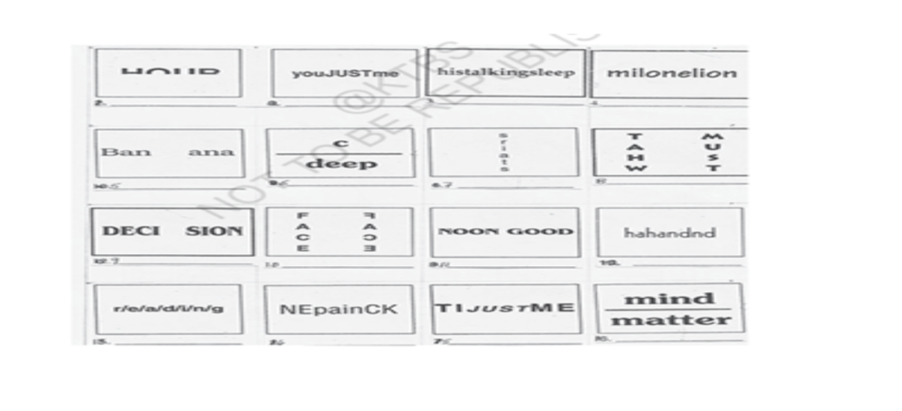

A. Answer briefly the following questions.
She saved it by penny-pinching and bargaining with the grocer, the vegetable man, and the butcher until she had saved one dollar and eighty-seven cents.
It was a furnished flat costing eight dollars per week. It had a broken letter-box and a faulty electric bell, showing that the family lived in poverty.
False. They only thought of shortening the name to "D". The card still displayed "Mr. James Dillingham Young."
Jim's gold watch and Della's beautiful long hair.
Della's hair was so beautiful that even Queen of Sheba's jewels would seem less valuable beside it.
Jim's watch was so valuable that King Solomon himself would feel jealous of it.
She wanted to buy a worthy Christmas gift for Jim but had only $1.87.
She received twenty dollars.
She bought a beautiful platinum watch chain.
The platinum chain was simple, elegant and perfectly matched Jim's precious gold watch.
Both had quiet dignity, simplicity and great value.
She curled her short hair with curling irons to make herself look presentable.
He stood still in shock, staring at her silently with a strange expression.
He bought a beautiful set of expensive tortoise-shell combs with jeweled rims.
No. Jim had sold his watch and Della had sold her hair, so neither gift could be used immediately.
She screamed with joy and then burst into tears because she could not use the combs until her hair grew back.
It shows their deep love, selflessness and willingness to sacrifice for each other.
Della's attempt to curl her short hair is humorous, yet it also reveals the sadness of her sacrifice.
The Magi were the wise men who brought gifts to baby Jesus on the first Christmas.
People like Jim and Della, who sacrifice their greatest treasures for love, are the true Magi.
Read the following extracts carefully. Discuss in pairs and then write the answers to the questions given below them.
"Generosity" refers to Della's selfless act of selling her beautiful long hair to earn money for Jim's Christmas gift.
Della used curling irons to curl her newly cut short hair so that it looked neat and attractive.
She wanted to reduce the shock of her changed appearance before Jim came home. She hoped he would still think she was beautiful despite her sacrifice.
The question is whether Jim and Della were truly rich or whether their sacrifices were worthwhile in a practical sense.
The right answer is that Jim and Della were the wisest of all because they sacrificed their greatest treasures out of true love.
Love cannot be measured by logic or mathematics. Their selfless sacrifices prove that true love is more valuable than any material possession, making them the real Magi.
Discuss in groups of four each the answers to the following questions. Individually, note down the important points for each question and then develop them into one-paragraph answers.
The comparison between Jim and Della’s gifts and those of the Magi is based on the spirit of true wisdom and self-sacrifice. The Magi were the wise men who brought precious gifts to the infant Jesus, establishing the tradition of Christmas gift-giving. While their gifts were of great material value, O. Henry suggests that the gifts exchanged by Jim and Della are even more meaningful because they sacrificed their most treasured possessions for each other. Their selfless love makes them the true Magi of the modern age.
The title "The Gift of the Magi" is highly appropriate because it highlights the central theme of love, sacrifice, and wisdom. Jim and Della appear foolish in giving away their greatest treasures, but the title reminds us that true wisdom lies not in material wealth but in selfless love. Their willingness to sacrifice everything for each other makes their gifts priceless and meaningful, just like the gifts of the Magi.
As I sat in our small flat holding my savings of only $1.87, I felt helpless because I could not afford a worthy Christmas gift for Jim. My beautiful long hair was my greatest treasure, and the thought of cutting it filled me with sadness. Yet my love for Jim was greater than my attachment to my hair. After much hesitation and inner conflict, I decided to sell my hair. I knew it would grow back one day, but the opportunity to express my love for Jim through a special gift could not be missed. Though the decision was painful, it filled my heart with happiness because it was made out of true love.
A. Fill in the blanks with the phrases given in the box below.
Develop your communication skills through dialogue writing and role play.
1. Write an imaginary conversation between Della and Jim after they presented gifts to each other.
Della : Why are you looking so dull?
Jim : No, dear. I'm not. I was just... thinking.
Della : I told you, my hair will grow fast. Please don't be sad about it. I did it for you.
Jim : I know, Della. And I love you all the more for it. But look at what I have in my hand... I bought these for you.
Della : The combs! The ones I admired in the shop window! They are beautiful, Jim, but I cannot use them now.
Jim : One day your hair will grow again, and they will be yours.
Della : But why do you look so sad?
Jim : I sold my gold watch to buy those combs.
Della : Oh, Jim! Then you cannot use the chain I bought for your watch.
Jim : We both sacrificed our greatest treasures for each other.
Della : That proves our love is more precious than any gift.
Jim : Yes, Della. We may be poor in wealth, but we are rich in love.
2. Role Play :
One student takes the role of Della and the other takes the role of Jim. Read the dialogue aloud before another pair of students.
Read the following dialogue between Della and Jim carefully and rewrite it in the reported speech.
Della : "Jim darling, don't look at me that way. I had my hair cut off and sold it. It'll grow out again. You won't mind, will you? I just had to do it."
Jim : "You have cut off your hair?"
Della : "Cut it off and sold it. Don't you like me as well anyhow? I'm me without my hair, ain't I?"
Jim : "You say your hair is gone?"
Della : "You needn't look for it. It's sold, I tell you—sold and gone, too. It's Christmas Eve, boy. Be good to me, for it went for you. Shall I put the chops on, Jim?"
Della cried to Jim, calling him darling, and told him not to look at her in that way. She explained that she had had her hair cut off and sold it. She assured him that it would grow out again and asked him whether he would mind, adding that she had just had to do it.
Jim asked her laboriously whether she had cut off her hair.
Della replied that she had cut it off and sold it. She asked him whether he did not like her just as well and said that she was still herself without her hair.
Jim asked, with almost an air of idiocy, whether she was saying that her hair was gone.
Della told him that he need not look for it. She insisted that it was sold and gone. She reminded him that it was Christmas Eve, requested him to be good to her because she had sold it for him, and finally asked whether she should put the chops on.
Imagine you went for an interview where you were asked the following questions. Tell your partner what questions were asked using indirect speech.
During my interview, the interviewer asked me several questions.
First, the interviewer asked me what my name was.
Then, the interviewer asked how old I was.
The interviewer wanted to know where I lived.
Next, I was asked whether I had passed the 10th standard.
The interviewer asked whether I knew how to ride a bicycle.
Then, I was asked why I wanted to work.
The interviewer also asked why I had not continued my studies.
I was asked what games I played.
The interviewer wanted to know how much salary I expected.
Finally, I was asked whether I was ready to work for a few extra hours if required.
In the following set of sentences, the sequencing of events is jumbled. Rearrange them and complete the given flowchart.
Read the first paragraph of the story carefully. It has seven sentences. The first three sentences are very short. They are followed by a long sentence and then again by three short sentences. Such a mixture is a matter of style and adds variety to the narration.
Example:
"There was clearly nothing to do but flop down on the shabby little couch and howl."
"So Della did it."
"Which instigates the moral reflection that life is made up of sobs, sniffles, and smiles, with sniffles predominating."
The combination of long and short sentences creates rhythm, emphasizes Della's emotions, and makes the narration lively and engaging.
Friendship is rare. It is precious. It is a bond that survives the toughest storms. It is the quiet, unspoken understanding between two souls who have walked through fire and shadow together, only to emerge on the other side with their connection stronger and deeper than ever before. It is support. It is laughter. It is home.
Imagine that you are a Social Service volunteer and have been camping in a village for ten days. Write a letter about your experience to the Editor of a daily newspaper.
Your Name
Your Address
City, State, PIN Code
Date: 16 July 2026
To,
The Editor,
Daily Newspaper,
City.
Subject: Experience of a Ten-Day Social Service Camp
Respected Sir/Madam,
I am writing this letter to share my memorable experience as a volunteer in a ten-day Social Service Camp held in a nearby village. The camp gave me an opportunity to understand rural life and serve the people.
During our stay, we conducted cleanliness drives, planted trees, created awareness about health and hygiene, and encouraged children to continue their education. We also organized cultural programmes and interacted with villagers to understand their daily challenges.
The experience taught me the importance of teamwork, discipline, compassion, and service to society. Although the villagers had limited facilities, they welcomed us warmly and inspired us with their simplicity and kindness.
I request you to publish this letter so that more students may be encouraged to participate in such social service activities and contribute towards the development of rural communities.
Thanking you.
Yours faithfully,
Your Name
Social Service Volunteer
A. Pronunciation (Pair Work)
Repeat the following words after your teacher. Then, in pairs, read the words aloud two or three times to each other.
| Word | Pronunciation |
|---|---|
| Comb | /koʊm/ |
| Thumb | /θʌm/ |
| Numb | /nʌm/ |
| Lamb | /læm/ |
| Climb | /klaɪm/ |
| Tomb | /tuːm/ |
| Bomb | /bɒm/ |
| Debt | /det/ |
| Doubt | /daʊt/ |
| Limb | /lɪm/ |
| Plumber | /ˈplʌmər/ |
| Subtle | /ˈsʌtəl/ |
| Word | Pronunciation |
|---|---|
| Judge | /dʒʌdʒ/ |
| Lodge | /lɒdʒ/ |
| Ledge | /ledʒ/ |
| Budget | /ˈbʌdʒɪt/ |
| Ledger | /ˈledʒər/ |
| Hedge | /hedʒ/ |
| Ridge | /rɪdʒ/ |
| Bridge | /brɪdʒ/ |
| Grudge | /ɡrʌdʒ/ |
| Fridge | /frɪdʒ/ |
| Drudgery | /ˈdrʌdʒəri/ |
| Nudge | /nʌdʒ/ |
| Handsome | /ˈhænsəm/ |
| Handkerchief | /ˈhæŋkərtʃɪf/ |
| Pledge | /pledʒ/ |
| Edge | /edʒ/ |
| Badge | /bædʒ/ |
| Word | Pronunciation |
|---|---|
| Honest | /ˈɒnɪst/ |
| Hour | /ˈaʊər/ |
| Heir | /eər/ |
| Exhaust | /ɪɡˈzɔːst/ |
| Exhibit | /ɪɡˈzɪbɪt/ |
| Honour | /ˈɒnər/ |
| Ghost | /ɡoʊst/ |
| Honourable | /ˈɒnərəbəl/ |
| Shepherd | /ˈʃepərd/ |
| Rhyme | /raɪm/ |
| Honorary | /ˈɒnərəri/ |
| Honorarium | /ˌɒnəˈreəriəm/ |
Look carefully at the following series of pictures. They tell a story. In pairs, narrate the story to each other. Then discuss and write:

Two dogs were tied together with a short rope. Each dog wanted to reach a different pile of food placed on opposite sides. At first, both dogs pulled in opposite directions, but neither could reach the food. They became tired and realized that fighting was useless. Finally, they cooperated. Together they first walked to one pile of food and ate it, and then moved to the other pile to finish the second one. By working together, both dogs got enough food and achieved their goal.
A. Subject–Verb Agreement
(Refer to Appendix II before doing this exercise.) Fill in the blanks with the suitable forms of the verbs given in brackets.
Some phrase-openings require inversion of the subject and verb. Complete the following sentences using correct inversion.
Add suitable question tags to the following statements.
A. What is a Palindrome?
A Palindrome is a word, sentence or paragraph that reads the same forwards as well as backwards.
Our first parents in the Garden of Eden must have introduced themselves in palindromic fashion.
How fast can you recall at least ten palindromic words?
The following boxes conceal meaningful phrases. Use your imagination and decipher them.

The answer for the first box is: Half an Hour